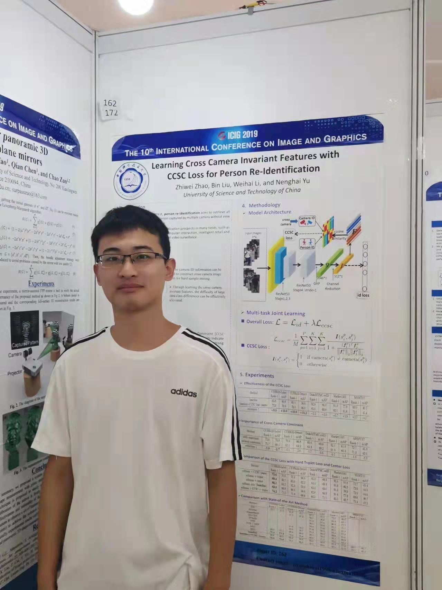

|  | 硕士研究生,中共党员 |
I am currently a graduate student at Dept. Electronic Engineering & Information Science (EEIS) of University of Science and Technology of China (USTC). My research interest includes deep learning, computer vision and artificial intelligence. At present, I focus on the Person Re-identification (Re-ID), multi-modality learning and domain adaptation/generalization, co-supervised by associate professor Bin Liu and professor Nenghai Yu. I am lucky to have experienced two wonderful research internships in Tencent and Alibaba, supervised by researcher Qiong Cao and Chenyi Lei respectively.
Joint Color-irrelevant Consistency Learning and Identity-aware Modality Adaptation for Visible-infrared Cross Modality Person Re-identification
Zhiwei Zhao, Bin Liu, Qi Chu, Yan Lu, Nenghai Yu.
AAAI Conference on Artificial Intelligence (AAAI2021 CCF-A类会议), pp. 3520-3528.
Learning Cross Camera Invariant Features with CCSC Loss for Person Re-Identification
Zhiwei Zhao, Bin Liu, Weihai Li, Nenghai Yu.
The 10th International Conference on Image and Graphics (ICIG2019)
Content-independent online handwriting verification based on multi-modal fusion
Nan Ji, Bin Liu, Zhiwei Zhao, Yan Lu, Qi Chu, Zhenchao Jin, Nenghai Yu.
IEEE International Conference on Multimedia and Expo. (ICME2021 CCF-B类会议)
阿里巴巴集团 淘系技术部-商业机器智能团队 杭州总部
多模态算法 实习内容：淘宝电商场景下的多模态预训练
腾讯公司 PCG内容与平台事业群-应用研究 深圳总部
计算机视觉算法 实习内容：PCG内容中台检索能力建设
全国大学生数学竞赛安徽省一等奖(第7名)
中国科学技术大学研究生学业一等奖学金
中国科学技术大学-苏州工业园区专项奖学金
中国模式识别会议大规模行人检索挑战赛-行人属性识别赛道第5名
![[QQ]](qq.jpeg){kind=link}